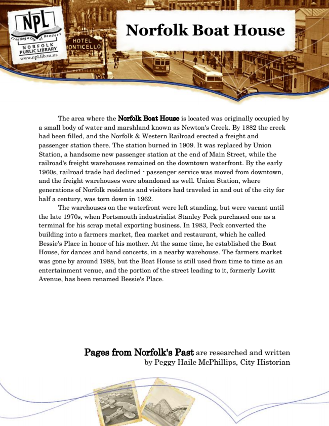

Norfolk Boat House
The area where the Norfolk Boat House is located was originally occupied by a small body of water and marshland known as Newton's Creek. By 1882 the creek had been filled, and the Norfolk & Western Railroad erected a freight and passenger station there. The station burned in 1909. It was replaced by Union Station, a handsome new passenger station at the end of Main Street, while the railroad's freight warehouses remained on the downtown waterfront. By the early 1960s, railroad trade had declined - passenger service was moved from downtown, and the freight warehouses were abandoned as well. Union Station, where generations of Norfolk residents and visitors had traveled in and out of the city for half a century, was torn down in 1962.
The warehouses on the waterfront were left standing, but were vacant until the late 1970s, when Portsmouth industrialist Stanley Peck purchased one as a terminal for his scrap metal exporting business. In 1983, Peck converted the building into a farmers market, flea market and restaurant, which he called Bessie's Place in honor of his mother. At the same time, he established the Boat House, for dances and band concerts, in a nearby warehouse. The farmers market was gone by around 1988, but the Boat House is still used from time to time as an entertainment venue, and the portion of the street leading to it, formerly Lovitt Avenue, has been renamed Bessie's Place.
Pages from Norfolk's Past are researched and written by Peggy Haile McPhillips, City Historian